Each skill is a ladder: a fully worked example in the
solid-framed box, then four YOUR TURN questions in the dashed
box — same skill, new numbers, no help. Work all four before checking
the gray check: line; a tracker tick needs all four right first
time.
Nothing in this chapter is skipped. §13.1–13.7 maps onto CED
topics 7.1 to 7.10, the whole of Unit 7.
And this chapter pays twice. Unit 8 — acids and bases, at
11–15% the second-heaviest unit on the exam — is almost entirely
equilibrium applied to one particular reaction. Every ICE table you
build here you will build again for a weak acid. A shaky Chapter 13
does not cost you one unit; it costs you two.
The single idea underneath everything. At equilibrium the
forward and reverse reactions have not stopped — they are running at
equal rates, so nothing appears to change. “Dynamic” is the
word that earns marks, and “the reaction has stopped” is the sentence
that loses them.
Ladder 1 • The equilibrium condition
ZUM §13.1
Equilibrium is reached when the forward and reverse rates become equal.
From that moment concentrations stop changing — but the reactions
themselves keep going.
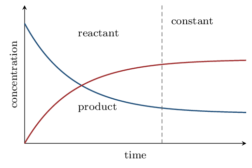
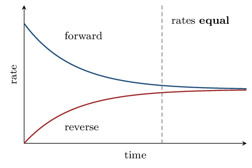
AP trap
Equal rates, not equal concentrations. At equilibrium there is
no requirement whatever that \([\text{reactant}] = [\text{product}]\) —
usually they are wildly different. What is equal is the rate at
which each side is being consumed and re-formed. Writing “the
concentrations become equal” is the classic wrong answer here.
I do: what is and is not true at equilibrium
Sort these statements about a system at equilibrium.“The forward and reverse reactions have stopped.”False, and it is the error the whole chapter is built to
prevent. Both reactions continue at full speed. Equilibrium is
dynamic: label a few reactant molecules and you would find them
turning into product and back again indefinitely.
“The concentrations are constant.”True — this is
what you observe. Each species is being formed exactly as fast as it is
consumed, so the net change is zero.
“The concentrations are equal.”False. Nothing
requires that, and for most reactions they differ by orders of
magnitude.
“The amounts of reactant and product no longer change.”True, and it is just the second statement restated.
How you would know experimentally. Equilibrium can be
approached from either direction — start with pure reactants
or with pure products and, at the same temperature, you arrive at the
same equilibrium mixture. That two-way approach is the strongest
evidence that the system is genuinely at equilibrium rather than simply
having run out of something.
YOUR TURN 1 — four questions
True or false: at equilibrium the forward reaction stops.
Explain.
false — both continue
True or false: at equilibrium \([\text{reactant}] =
[\text{product}]\). Explain.
false — no such
requirement
What quantity is equal at equilibrium?
the forward and reverse rates
What would you observe that tells you equilibrium has been
reached?
concentrations stop changing
(a) false — both continue (b) false — no such
requirement (c) the forward and reverse rates (d)
concentrations stop changing
(a) False. Both reactions continue
at equal rates — equilibrium is dynamic, not static. Nothing
has stopped; the two processes simply cancel. (b) False. There
is no requirement that concentrations be equal, and usually they are
very different. What the equilibrium constant fixes is their
ratio, not their equality. (c) The forward and reverse
reaction rates. (d) That the concentrations (or pressures, or
colour) stop changing and then remain constant — while the
temperature is held fixed and nothing is added or removed.
Ladder 2 • Writing the equilibrium
expression
ZUM §13.2
For \(a\ce{A} + b\ce{B} \rightleftharpoons c\ce{C} + d\ce{D}\):
(a) \(\ce{N2(g) + 3H2(g) <=> 2NH3(g)}\)
\[ K_{c} = \frac{[\ce{NH3}]^{2}}{[\ce{N2}][\ce{H2}]^{3}} \]
The 3 on \(\ce{H2}\) is an exponent, not a multiplier — \([\ce{H2}]^{3}\),
never \(3[\ce{H2}]\). That single confusion accounts for a startling share
of lost marks.
(b) \(\ce{2SO2(g) + O2(g) <=> 2SO3(g)}\)
\[ K_{c} = \frac{[\ce{SO3}]^{2}}{[\ce{SO2}]^{2}[\ce{O2}]} \]
(c) \(\ce{H2(g) + I2(g) <=> 2HI(g)}\)
\[ K_{c} = \frac{[\ce{HI}]^{2}}{[\ce{H2}][\ce{I2}]} \]
What \(K\) does and does not depend on. It depends on the
temperature and on nothing else. Changing concentrations, changing the
pressure, or adding a catalyst does not change \(K\) — those
shift the position of equilibrium, which is a different thing entirely
and is Ladders 11 and 12. Only a change in temperature changes the
number itself.
Why \(K\) carries no units here. Strictly it is built from
activities, which are ratios and therefore dimensionless. At this level
just report \(K\) as a bare number — an answer with units attached is
not what the CED expects.
Name the only variable that changes the value of \(K\).
temperature
(a) \([\ce{PCl3}][\ce{Cl2}]/[\ce{PCl5}]\) (b)
\([\ce{NO2}]^{2}/([\ce{NO}]^{2}[\ce{O2}])\) (c)
\([\ce{NO}]^{4}[\ce{H2O}]^{6}/([\ce{NH3}]^{4}[\ce{O2}]^{5})\) (d)
temperature
(a) \(K_{c} =
\dfrac{[\ce{PCl3}][\ce{Cl2}]}{[\ce{PCl5}]}\).
(b) \(K_{c} = \dfrac{[\ce{NO2}]^{2}}{[\ce{NO}]^{2}[\ce{O2}]}\).
(c) \(K_{c} =
\dfrac{[\ce{NO}]^{4}[\ce{H2O}]^{6}}{[\ce{NH3}]^{4}[\ce{O2}]^{5}}\).
(d) Temperature, and nothing else. Changing a concentration or
a pressure shifts where the system sits along the equilibrium, and a
catalyst changes only how fast it gets there — none of them alters
\(K\).
Ladder 3 • \(K_{p}\) and \(K_{c}\)
ZUM §13.3
For gases you may build \(K\) out of partial pressures instead of
concentrations. The two are related through the change in the number of
moles of gas.
\[ K_{p} = K_{c}\,(RT)^{\Delta n}
\qquad
\Delta n = \big(\text{mol gas products}\big)
- \big(\text{mol gas reactants}\big) \]
with \(R = 0.08206\;\mathrm{L\,atm\,mol^{-1}\,K^{-1}}\) and \(T\) in
kelvin.
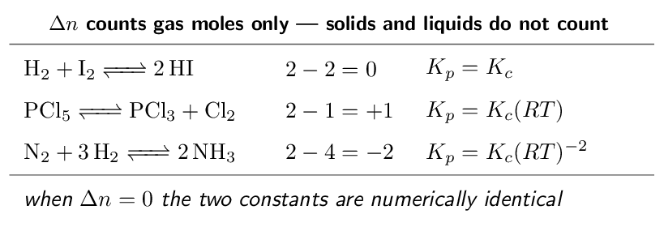
I do: converting between the two
A gas-phase reaction has \(K_{c} = 0.500\) at 400 K
and \(\Delta n = +1\). Find \(K_{p}\).
\[ K_{p} = K_{c}(RT)^{\Delta n}
= 0.500 \times (0.08206 \times 400)^{1} \]
\[ = 0.500 \times 32.82 = \mathbf{16.4} \]
Check the direction of the change. \(\Delta n\) is positive, so
\((RT)^{\Delta n}\) is a factor larger than 1 and \(K_{p} > K_{c}\). If
\(\Delta n\) had been negative, \(K_{p}\) would have come out smaller. A
quick look at the sign tells you whether your answer should have grown
or shrunk before you compute anything.
The two things that go wrong here. \(T\) must be in
kelvin — the equation is meaningless in celsius. And
\(\Delta n\) counts gas moles only: in
\(\ce{CaCO3(s) <=> CaO(s) + CO2(g)}\), \(\Delta n = 1 - 0 = +1\), because
neither solid contributes.
When you can skip the conversion entirely. If \(\Delta n = 0\)
then \((RT)^{0} = 1\) and \(K_{p} = K_{c}\) exactly. Count the gas moles on
each side first — if they match, there is nothing to calculate.
YOUR TURN 3 — four questions
Find \(\Delta n\) for \(\ce{2SO2(g) + O2(g) <=> 2SO3(g)}\).
For that reaction, is \(K_{p}\) larger or smaller than \(K_{c}\)?
smaller
Find \(\Delta n\) for \(\ce{CaCO3(s) <=> CaO(s) + CO2(g)}\).
A reaction has \(K_{c} = 2.0\) and \(\Delta n = 0\). Give \(K_{p}\).
(a) \(-1\) (b) smaller (c) \(+1\) (d) 2.0
(a) \(2 - 3 = \mathbf{-1}\).
(b) Smaller. \(\Delta n\) is negative, so \((RT)^{-1}\) is less
than 1 (at ordinary temperatures \(RT\) is well above 1), and multiplying
by it shrinks \(K_{c}\). (c) \(\mathbf{+1}\) — only \(\ce{CO2}\) is a gas;
both solids are ignored. (d) \(K_{p} = K_{c}(RT)^{0} = K_{c} \times 1 =
\mathbf{2.0}\).
Ladder 4 • Heterogeneous equilibria
ZUM §13.4
Pure solids and pure liquids are left out of the equilibrium
expression. Not set to zero — left out.
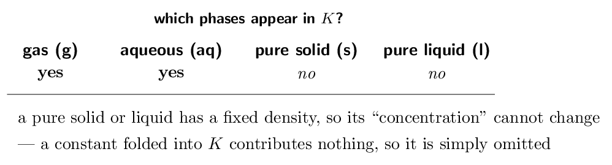
I do: why a solid drops out
For \(\ce{CaCO3(s) <=> CaO(s) + CO2(g)}\), the expression is
just
\[ K_{c} = [\ce{CO2}]
\qquad\text{and}\qquad
K_{p} = P_{\ce{CO2}} \]
Why the solids vanish. The “concentration” of a pure solid
is its density divided by its molar mass — a fixed property of the
substance. Adding more \(\ce{CaCO3}\) gives you a bigger lump, not a more
concentrated one. Since the quantity never changes, it is a constant;
constants get absorbed into \(K\), and what is left is the expression
above.
The consequence students find surprising. Adding more solid
\(\ce{CaCO3}\) to this system does nothing — it does not shift
the equilibrium and does not change the \(\ce{CO2}\) pressure. Nor does
removing some, as long as some remains. What matters is that the
solid is present at all; how much is irrelevant.
But do not confuse pure liquids with solutions. Water as a pure
liquid solvent is omitted. Water as a gas is included. And a
dissolved species is always included, however dilute — “(aq)” means
it counts.
A second example to fix the pattern:
\(\ce{Fe3O4(s) + 4H2(g) <=> 3Fe(s) + 4H2O(g)}\) gives
\[ K_{c} = \frac{[\ce{H2O}]^{4}}{[\ce{H2}]^{4}} \]
Both solids are gone; only the two gases survive.
Does adding more solid to a heterogeneous equilibrium shift it?
Explain.
no — its concentration is fixed
(a) \([\ce{CO2}][\ce{H2O}]\) (b)
\([\ce{CO}]^{2}/[\ce{CO2}]\) (c) \([\ce{Ag+}][\ce{Cl-}]\) (d)
no — its concentration is fixed
(a) \(K_{c} = [\ce{CO2}][\ce{H2O}]\) — both
solids omitted. (b) \(K_{c} = \dfrac{[\ce{CO}]^{2}}{[\ce{CO2}]}\) —
carbon is a pure solid. (c) \(K_{c} = [\ce{Ag+}][\ce{Cl-}]\); the solid is
omitted, and both ions are aqueous so both count. (You will meet this
one again as \(K_{sp}\).) (d) No. A pure solid's concentration is
its density over its molar mass, which is fixed — adding more makes a
larger pile, not a more concentrated one. Since the solid does not
appear in \(K\), changing how much of it is present cannot shift anything,
provided at least some remains.
Ladder 5 • What the size of \(K\) tells you
ZUM §13.5
\(K\) is a statement about where the equilibrium sits — how far
the reaction goes before it balances.
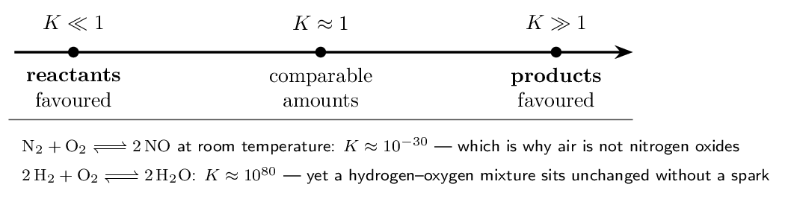
AP trap
\(K\) says nothing about speed. A reaction with \(K = 10^{80}\) can
be immeasurably slow, and hydrogen and oxygen sitting together in a
flask are the standard demonstration: enormously product-favoured, and
nothing happens for years without a spark. \(K\) is thermodynamics —
how far. Chapter 12 was kinetics — how fast. Confusing
them is the commonest conceptual error across Units 5 and 7 together.
I do: reading three values of \(K\)
\(\ce{H2 + I2 <=> 2HI}\) has \(K_{c} = 54.3\) at
698 K. Greater than 1, so products are favoured — but
only modestly. A value of 54 means a substantial amount of \(\ce{H2}\) and
\(\ce{I2}\) is still present at equilibrium. This is a genuinely
reversible reaction in the everyday sense.
\(\ce{N2 + O2 <=> 2NO}\) has \(K \approx 10^{-30}\) at room
temperature. Overwhelmingly reactant-favoured. The air you are
breathing is roughly 78% \(\ce{N2}\) and 21% \(\ce{O2}\), and the equilibrium
amount of \(\ce{NO}\) is negligible. Raise the temperature to that of a car
engine, however, and \(K\) climbs — which is exactly why internal
combustion produces \(\ce{NO_x}\) pollution.
\(\ce{2H2 + O2 <=> 2H2O}\) has \(K \approx 10^{80}\). So
product-favoured that for practical purposes the reaction goes to
completion — yet it needs a spark, because its activation energy is
large. Thermodynamically inevitable, kinetically stalled.
The rule of thumb worth carrying. \(K > 10^{3}\): treat as
essentially complete. \(K < 10^{-3}\): treat as barely proceeding.
Between those, both sides are present in meaningful amounts and you
will need an ICE table (Ladder 9) to say anything quantitative.
YOUR TURN 5 — four questions
A reaction has \(K = 2e-8\). Which side is favoured?
reactants
A reaction has \(K = 4e6\). Which side is favoured?
products
Does a large \(K\) mean the reaction is fast? Explain.
no — \(K\) is not
about rate
Reaction A has \(K = 10\) and reaction B has \(K = 1000\). Which
proceeds further toward products?
B
(a) reactants (b) products (c) no — \(K\) is not
about rate (d) B
(a) Reactants, heavily — \(K\) is far
below 1. (b) Products, heavily. (c) No. \(K\) describes
how far a reaction proceeds before balancing, not how
fast it gets there. \(\ce{2H2 + O2 <=> 2H2O}\) has \(K \approx 10^{80}\)
and yet does not react at all at room temperature without a spark,
because its activation energy is high. Rate is Chapter 12; extent is
Chapter 13. (d) B. A larger \(K\) means the equilibrium lies
further toward products.
Ladder 6 • The reaction quotient \(Q\)
ZUM §13.5
\(Q\) is calculated exactly like \(K\) — same expression — but from
whatever concentrations you happen to have, equilibrium or not.
Comparing \(Q\) with \(K\) tells you which way the reaction must go.
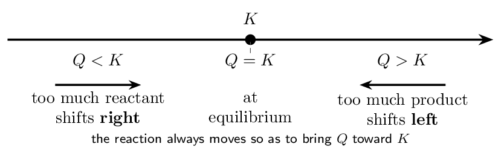
I do: predicting the direction
For \(\ce{H2 + I2 <=> 2HI}\), \(K_{c} = 54.3\). A flask contains
\([\ce{H2}] = [\ce{I2}] = [\ce{HI}] = 0.100\,\mathrm{M}\). Which way
does the reaction go?Build \(Q\) with exactly the expression you would use for \(K\):
\[ Q = \frac{[\ce{HI}]^{2}}{[\ce{H2}][\ce{I2}]}
= \frac{(0.100)^{2}}{(0.100)(0.100)}
= \frac{0.0100}{0.0100} = 1.00 \]
Compare. \(Q = 1.00\) and \(K = 54.3\), so \(Q < K\).
Interpret. There is too little product relative to
equilibrium, so the reaction runs forward — \(\ce{HI}\) is
produced and \(\ce{H2}\) and \(\ce{I2}\) are consumed — until \(Q\) climbs to
54.3.
The mental model that makes this automatic. \(Q\) has the
products on top. If \(Q\) is too small, the top is too small, so
the reaction makes more product — it goes right. If \(Q\) is too
large, the top is too big, so it consumes product — it goes
left. You never need to memorise a rule; you just read the fraction.
And note what \(Q\) is for. It answers “which way?” before you
do any hard work. If a question hands you a set of concentrations and
asks for the direction of change, computing \(Q\) is the whole answer —
no ICE table required.
YOUR TURN 6 — four questions
For \(\ce{A <=> B}\) with \(K = 4.0\):
\([\ce{A}] = 1.0\,\mathrm{M}\), \([\ce{B}] = 1.0\,\mathrm{M}\).
Find \(Q\) and the direction.
\(Q = 1.0\), right
\([\ce{A}] = 0.10\,\mathrm{M}\), \([\ce{B}] = 0.80\,\mathrm{M}\).
Find \(Q\) and the direction.
\(Q = 8.0\), left
\([\ce{A}] = 0.50\,\mathrm{M}\), \([\ce{B}] = 2.0\,\mathrm{M}\).
Find \(Q\) and the direction.
\(Q = 4.0\), at equilibrium
In one sentence, what does \(Q\) tell you that \(K\) cannot?
which way a particular mixture must
move
(a) \(Q = 1.0\), right (b) \(Q = 8.0\), left (c)
\(Q = 4.0\), at equilibrium (d) which way a particular mixture must
move
(a) \(Q = 1.0/1.0 = \mathbf{1.0}\); \(Q < K\), so
the reaction shifts right (toward \(\ce{B}\)). (b) \(Q = 0.80/0.10 =
\mathbf{8.0}\); \(Q > K\), so it shifts left (toward \(\ce{A}\)). (c)
\(Q = 2.0/0.50 = \mathbf{4.0}\); \(Q = K\), so the mixture is already
at equilibrium and does not change. (d) \(Q\) tells you
which direction a particular, non-equilibrium mixture must move
— \(K\) alone only says where the system will end up, not where it
currently stands relative to that.
Ladder 7 • Manipulating \(K\)
ZUM §13.2
Rewrite an equation and \(K\) changes in a predictable way. Three
operations cover everything the exam asks.
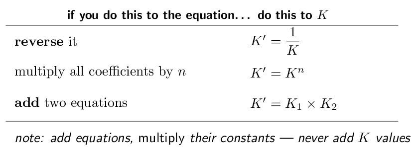
I do: one \(K\), four questions
For \(\ce{A <=> B}\), \(K = 4.0\). Find \(K\) for each rewriting.(a) \(\ce{B <=> A}\). Reversed, so take the reciprocal:
\[ K' = \frac{1}{4.0} = \mathbf{0.25} \]
(b) \(\ce{2A <=> 2B}\). Coefficients doubled, so square:
\[ K' = (4.0)^{2} = \mathbf{16} \]
(c) \(\ce{2B <=> 2A}\). Both operations — reverse
and double:
\[ K' = \left(\frac{1}{4.0}\right)^{2} = \mathbf{0.0625} \]
Order does not matter; you may square then invert, or invert then
square, and get the same number.
(d) Why reversing inverts. Look at the expression.
For \(\ce{A <=> B}\), \(K = [\ce{B}]/[\ce{A}]\). For \(\ce{B <=> A}\), the
products and reactants swap, so \(K' = [\ce{A}]/[\ce{B}]\) — the same
fraction upside down. And doubling the coefficients squares every
concentration in the expression, so the whole fraction is squared. Both
rules fall straight out of the definition; there is nothing extra to
remember.
Adding equations. If \(\ce{A <=> B}\) has \(K_{1}\) and
\(\ce{B <=> C}\) has \(K_{2}\), then \(\ce{A <=> C}\) has
\(K = K_{1}K_{2}\), because
\[ \frac{[\ce{B}]}{[\ce{A}]} \times \frac{[\ce{C}]}{[\ce{B}]}
= \frac{[\ce{C}]}{[\ce{A}]} \]
— the intermediate cancels, exactly as it does in a Hess's law
calculation. Same bookkeeping, multiplication instead of addition.
YOUR TURN 7 — four questions
For \(\ce{X <=> Y}\), \(K = 9.0\).
Find \(K\) for \(\ce{Y <=> X}\).
Find \(K\) for \(\ce{3X <=> 3Y}\).
\(\ce{X <=> Y}\) has \(K = 9.0\) and \(\ce{Y <=> Z}\) has \(K = 2.0\).
Find \(K\) for \(\ce{X <=> Z}\).
Why do you multiply rather than add the constants when adding
two equations?
the
expressions multiply and the intermediate cancels
(a) 0.11 (b) 729 (c) 18 (d) the
expressions multiply and the intermediate cancels
(a) \(1/9.0 = \mathbf{0.11}\). (b)
\((9.0)^{3} = \mathbf{729}\). (c) \(9.0 \times 2.0 = \mathbf{18}\). (d)
Because \(K\) is a product of concentration terms, not a sum.
Writing the two expressions side by side,
\(\frac{[\ce{Y}]}{[\ce{X}]} \times \frac{[\ce{Z}]}{[\ce{Y}]} =
\frac{[\ce{Z}]}{[\ce{X}]}\) — the intermediate cancels only under
multiplication. It is the same bookkeeping as Hess's law, except that
Hess's law adds \(\Delta H\) values because enthalpy is a sum.
Ladder 8 • Finding \(K\) from equilibrium
concentrations
ZUM §13.2
The easiest calculation in the chapter, and worth being fast at: you
are handed equilibrium values and simply substitute.
I do: substitute and check
For \(\ce{H2(g) + I2(g) <=> 2HI(g)}\) a flask at equilibrium
contains \([\ce{H2}] = 0.0075\,\mathrm{M}\), \([\ce{I2}] =
0.0075\,\mathrm{M}\) and \([\ce{HI}] = 0.055\,\mathrm{M}\). Find
\(K_{c}\).Write the expression first, always.
\[ K_{c} = \frac{[\ce{HI}]^{2}}{[\ce{H2}][\ce{I2}]} \]
Substitute.
\[ K_{c} = \frac{(0.055)^{2}}{(0.0075)(0.0075)}
= \frac{3.025e-3}{5.625e-5}
= \mathbf{54} \]
Is the answer sensible? \(K > 1\), so products are favoured —
consistent with the fact that \([\ce{HI}]\) is far larger than either
reactant. If you had got a number less than 1 from these figures, you
would have inverted the fraction.
The one condition that must hold. Every value you substitute
must be an equilibrium concentration. If a question gives you
initial concentrations, you cannot substitute them — you must
first work out the equilibrium values, which is what the ICE table of
Ladder 9 exists to do. Reading “initial” as “equilibrium” is the
most expensive misreading in this chapter.
A cross-check worth knowing: the accepted value for this
reaction at 698 K is \(K_{c} = 54.3\), so our 54 is right.
YOUR TURN 8 — four questions
For \(\ce{A <=> B}\), equilibrium gives \([\ce{A}] =
0.20\,\mathrm{M}\) and \([\ce{B}] = 0.60\,\mathrm{M}\). Find
\(K\).
For \(\ce{2A <=> B}\), equilibrium gives \([\ce{A}] =
0.10\,\mathrm{M}\) and \([\ce{B}] = 0.50\,\mathrm{M}\). Find
\(K\).
Why may you not substitute initial concentrations into
\(K\)?
\(K\) is defined
only at equilibrium
(a) 3.0 (b) 50 (c) 200 (d) \(K\) is defined
only at equilibrium
(a) \(K = 0.60/0.20 = \mathbf{3.0}\).
(b) \(K = \dfrac{0.50}{(0.10)^{2}} = \dfrac{0.50}{0.010} = \mathbf{50}\).
(c) \(K_{c} = \dfrac{(0.40)^{2}}{(0.10)(0.20)^{3}} =
\dfrac{0.16}{(0.10)(0.0080)} = \dfrac{0.16}{8.0e-4} =
\mathbf{200}\). (d) Because \(K\) is defined only in terms of
equilibrium concentrations. Substituting initial values gives you \(Q\),
not \(K\) — a perfectly meaningful number, but one that tells you which
way the reaction will move rather than where it ends
up.
Ladder 9 • ICE tables
ZUM §13.6
When you are given initial concentrations and \(K\), and asked for
the equilibrium ones, you need an ICE table — Initial, Change,
Equilibrium.
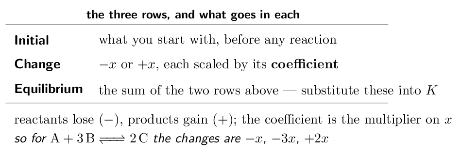
I do: a full ICE calculation
For \(\ce{H2 + I2 <=> 2HI}\), \(K_{c} = 54.3\). A flask starts with
1.00 M each of \(\ce{H2}\) and \(\ce{I2}\) and no \(\ce{HI}\). Find all
three equilibrium concentrations.Build the table. \(\ce{H2}\) and \(\ce{I2}\) each lose \(x\); \(\ce{HI}\)
gains \(2x\), because its coefficient is 2.
\([\ce{H2}]\)
\([\ce{I2}]\)
\([\ce{HI}]\)
I
1.00
1.00
0
C
\(-x\)
\(-x\)
\(+2x\)
E
\(1.00-x\)
\(1.00-x\)
\(2x\)
Substitute the E row into \(K\).
\[ 54.3 = \frac{(2x)^{2}}{(1.00-x)(1.00-x)}
= \frac{4x^{2}}{(1.00-x)^{2}} \]
Take the square root of both sides — legitimate here because
both sides are perfect squares, and far quicker than the quadratic
formula:
\[ \sqrt{54.3} = \frac{2x}{1.00-x}
\qquad\Longrightarrow\qquad
7.369 = \frac{2x}{1.00-x} \]
Solve.
\[ 7.369(1.00-x) = 2x
\;\Longrightarrow\;
7.369 = 9.369x
\;\Longrightarrow\;
x = 0.787 \]
Read off the answers.
\[ [\ce{H2}] = [\ce{I2}] = 1.00 - 0.787 = 0.213\,\mathrm{M}
\qquad
[\ce{HI}] = 2(0.787) = 1.57\,\mathrm{M} \]
Always check by substituting back:
\[ \frac{(1.57)^{2}}{(0.213)^{2}} = 54.3 \quad\checkmark \]
That check costs one line and catches every algebra slip. And note that
\(x\) came out large — 79% of the starting material reacted — which
is what a \(K\) of 54 should do. Do not be alarmed by a large \(x\) when \(K\)
is large.
YOUR TURN 9 — four questions
For \(\ce{A + B <=> 2C}\), give the Change row in terms of \(x\).
\(-x\), \(-x\), \(+2x\)
For \(\ce{N2 + 3H2 <=> 2NH3}\), give the Change row.
\(-x\), \(-3x\), \(+2x\)
\(\ce{A <=> B}\) has \(K = 3.0\) and starts at \([\ce{A}] =
1.00\,\mathrm{M}\), \([\ce{B}] = 0\). Find \(x\) and both
equilibrium concentrations.
\(x = 0.75\); 0.25 and 0.75 M
Why must you substitute the E row, not the
I row, into \(K\)?
\(K\) is
defined at equilibrium
(a) \(-x\), \(-x\), \(+2x\) (b) \(-x\), \(-3x\), \(+2x\)
(c) \(x = 0.75\); 0.25 and 0.75 M (d) \(K\) is
defined at equilibrium
(a) \(\mathbf{-x,\; -x,\; +2x}\). (b)
\(\mathbf{-x,\; -3x,\; +2x}\) — each change is scaled by that species'
coefficient. (c) E row is \(1.00-x\) and \(x\), so
\(3.0 = \dfrac{x}{1.00-x}\), giving \(3.0 - 3.0x = x\), so \(4.0x = 3.0\) and
\(x = \mathbf{0.75}\). Then \([\ce{A}] = \mathbf{0.25\,\mathrm{M}}\) and
\([\ce{B}] = \mathbf{0.75\,\mathrm{M}}\). Check: \(0.75/0.25 = 3.0\)
✓ (d) Because \(K\) is defined in terms of equilibrium
concentrations. Substituting the I row would give \(Q\) at the start of
the experiment — which for these problems is usually 0, and tells you
only that the reaction runs forward.
Ladder 10 • The small-\(x\) approximation
ZUM §13.6
When \(K\) is very small, barely any reaction occurs, and the algebra
simplifies enormously — provided you check that you were entitled to
simplify it.
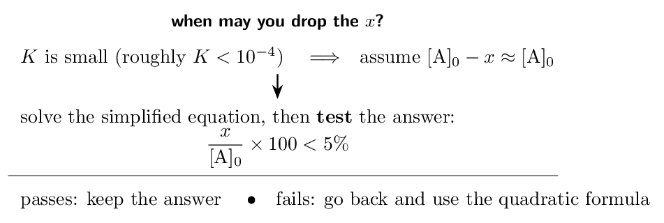
I do: approximate, then justify
For \(\ce{A <=> B + C}\), \(K = 1.0e-5\) and \([\ce{A}]_{0} =
0.100\,\mathrm{M}\). Find the equilibrium concentrations.The ICE row is \(0.100-x\), \(x\), \(x\), so
\[ K = \frac{x^{2}}{0.100-x} = 1.0e-5 \]
which is a quadratic — solvable, but tedious.
Make the approximation. \(K\) is tiny, so almost no \(\ce{A}\)
reacts and \(x\) must be very small compared with 0.100. Drop it from the
denominator:
\[ \frac{x^{2}}{0.100} \approx 1.0e-5
\;\Longrightarrow\;
x^{2} = 1.0e-6
\;\Longrightarrow\;
x = 1.0e-3 \]
Now justify it — this step is not optional.
\[ \frac{1.0e-3}{0.100} \times 100 = 1.0\% \]
That is comfortably under 5%, so the approximation was valid and the
answer stands.
\[ [\ce{A}] = 0.099\,\mathrm{M}
\qquad
[\ce{B}] = [\ce{C}] = 1.0e-3\,\mathrm{M} \]
How good was it, really? Solving the full quadratic gives
\(x = 9.95e-4\) against our 1.0e-3 — an error of about
0.5%, far smaller than the precision of the data. The shortcut cost
nothing.
And when it fails. If the 5% test comes out at, say, 12%,
the approximation is not merely imprecise, it is wrong, and you must
return to the quadratic. Examiners award the mark for performing
the check, so show it even when it obviously passes.
YOUR TURN 10 — four questions
For \(\ce{A <=> B + C}\) with \(K = 4.0e-6\) and
\([\ce{A}]_{0} = 1.00\,\mathrm{M}\), find \(x\) using the
approximation.
\(x = 2.0e-3\)
Test that approximation with the 5% rule.
0.20% — valid
If the test gives 9%, what must you do?
solve the quadratic
Why is the approximation safe when \(K\) is very small?
barely any reactant is consumed
(a) \(x = 2.0e-3\) (b) 0.20% — valid (c)
solve the quadratic (d) barely any reactant is consumed
(a) \(x^{2}/1.00 \approx 4.0e-6\), so
\(x^{2} = 4.0e-6\) and \(x = \mathbf{2.0e-3}\). (b)
\(\dfrac{2.0e-3}{1.00} \times 100 = \mathbf{0.20\%}\), far below
5%, so the approximation is valid. (c) Discard the
approximation and solve the full quadratic — 9% exceeds the 5%
threshold, so \(x\) is not negligible against \([\ce{A}]_{0}\). (d) Because
a very small \(K\) means the equilibrium lies far toward the reactants, so
only a tiny fraction of \(\ce{A}\) is consumed. Subtracting that tiny \(x\)
from \([\ce{A}]_{0}\) changes it by less than the precision of the data,
so leaving it out introduces negligible error.
Ladder 11 • Le Ch\^atelier:
concentration and pressure
ZUM §13.7
Disturb a system at equilibrium and it shifts so as to partly
counteract the disturbance. Note “partly” — it never fully undoes
what you did.
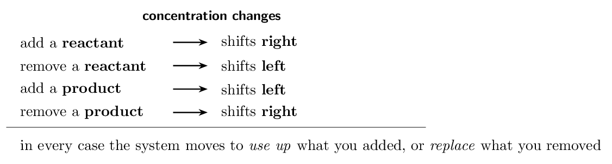
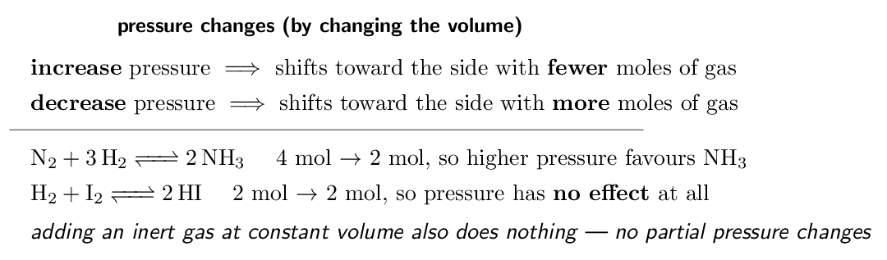
I do: four disturbances, one reaction
For \(\ce{N2(g) + 3H2(g) <=> 2NH3(g)}\), predict the effect of
each change.(a) Add \(\ce{N2}\). \(Q\) falls below \(K\) (the denominator grew), so
the system shifts right, consuming some of the added \(\ce{N2}\)
and making more \(\ce{NH3}\).
(b) Remove \(\ce{NH3}\) as it forms. \(Q\) falls below \(K\) again, so
the system shifts right to replace it. This is why industrial
plants condense ammonia out continuously — it drives the reaction
forward indefinitely.
(c) Compress the vessel to half its volume. All partial
pressures double, so the system shifts toward fewer moles of
gas. The left side has \(1 + 3 = 4\); the right has 2. It shifts
right.
(d) Add argon at constant volume.No shift. The total
pressure rises, but the partial pressures of \(\ce{N2}\), \(\ce{H2}\) and
\(\ce{NH3}\) are unchanged — none of them is in a smaller volume than
before, and argon appears nowhere in \(Q\). This is the disturbance
students most often get wrong.
The rigorous way to answer any of these. Do not reason from a
slogan; compute what happened to \(Q\). If the change made \(Q < K\), the
reaction goes right; if \(Q > K\), left; if \(Q\) is untouched, nothing
happens. Le Ch\^atelier's principle is a shortcut for that comparison,
and when the shortcut feels ambiguous, \(Q\) never is.
And note what did not happen in any of (a)–(d): \(K\)
never changed. Only temperature does that — Ladder 12.
YOUR TURN 11 — four questions
For \(\ce{2SO2(g) + O2(g) <=> 2SO3(g)}\):
Which way does it shift if \(\ce{O2}\) is added?
right
Which way does it shift if \(\ce{SO3}\) is removed?
right
Which way does it shift if the volume is decreased?
right — 3 mol to
2 mol
Which way does it shift if helium is added at constant volume?
Explain.
no shift
(a) right (b) right (c) right — 3 mol to
2 mol (d) no shift
(a) Right, to consume the added
\(\ce{O2}\). (b) Right, to replace the removed \(\ce{SO3}\). (c)
Right. Decreasing the volume raises the pressure, and the
system shifts toward the side with fewer moles of gas — the left has
\(2+1 = 3\), the right has 2. (d) No shift. Helium raises the
total pressure but does not change the partial pressure of any
reacting gas, since the volume is unchanged. \(Q\) is therefore unaltered
and the system is still at equilibrium. An inert gas added at constant
volume never shifts an equilibrium.
Ladder 12 • Le Ch\^atelier:
temperature and catalysts
ZUM §13.7
Temperature is different in kind from every other disturbance: it is the
only one that changes the value of \(K\) itself.
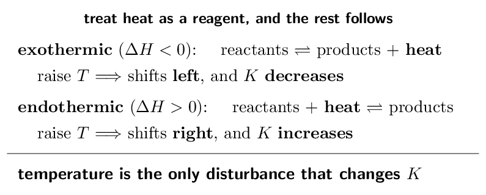
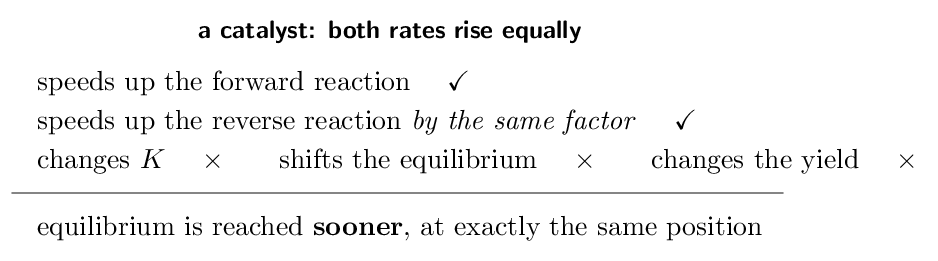
I do: the Haber process, where it all collides
\(\ce{N2(g) + 3H2(g) <=> 2NH3(g)}\), \(\Delta H =
-92\,\mathrm{kJ/mol}\). What conditions maximise the yield of
ammonia, and what does industry actually use?Pressure. Four moles of gas become two, so high
pressure shifts the equilibrium toward ammonia. Industry uses roughly
200 atm — limited by what the vessels can withstand rather
than by chemistry.
Temperature. The reaction is exothermic, so heat is a product
and low temperature shifts toward ammonia and raises \(K\). But
here chemistry and reality collide: at low temperature the reaction is
far too slow to be useful. Thermodynamics wants it cold; kinetics needs
it hot.
The compromise. Industry runs at about
450 °C — hot enough to be fast, cool enough that the
yield is not ruinous — and adds an iron catalyst, which
raises the rate without touching the equilibrium position at all.
Ammonia is then condensed out continuously, which by Ladder 11 keeps
pulling the reaction to the right.
This is the exam question in disguise. “Why not just use a low
temperature, since the reaction is exothermic?” The answer is that
\(K\) and rate pull in opposite directions, and a working plant must
satisfy both. Notice how many chapters are in play at once: equilibrium
position (13.7), the size of \(K\) (13.5), reaction rate and catalysis
(Chapter 12), and \(\Delta H\) (Chapter 6).
One caution. The catalyst is there for rate alone. Writing that
it “increases the yield” is wrong and is specifically penalised.
YOUR TURN 12 — four questions
An endothermic reaction is heated. Which way does it shift, and
what happens to \(K\)?
right; \(K\) increases
An exothermic reaction is cooled. Which way does it shift?
right
Does a catalyst change \(K\)? Explain.
no —
both rates rise equally
Name the only disturbance that changes the value of \(K\).
temperature
(a) right; \(K\) increases (b) right (c) no —
both rates rise equally (d) temperature
(a) Heat behaves as a reactant for an
endothermic reaction, so adding it shifts the system right, and
\(K\) increases. (b) Right. For an exothermic reaction
heat is a product, so removing heat shifts the system toward products.
(c) No. A catalyst lowers the activation energy of the forward
and reverse reactions by the same amount, so both rates rise by the same
factor and their ratio — which is what \(K\) expresses — is unchanged.
Equilibrium is reached sooner, in exactly the same place. (d)
Temperature, and only temperature.
Mastery tracker
Tick a row only if all four YOUR TURN questions were right on
the first attempt. Every row is assessed — Chapter 13 has no
off-syllabus sections.
First try?
Skill
Ladder
If not, re-read…
\(\square\)
the equilibrium condition
1
dynamic, not stopped
\(\square\)
writing \(K\) expressions
2
products over reactants
\(\square\)
\(K_{p}\) and \(K_{c}\)
3
\(\Delta n\) counts gas only
\(\square\)
heterogeneous equilibria
4
solids and liquids drop out
\(\square\)
the magnitude of \(K\)
5
extent, never rate
\(\square\)
the reaction quotient \(Q\)
6
compare \(Q\) with \(K\)
\(\square\)
manipulating \(K\)
7
reverse, power, multiply
\(\square\)
\(K\) from concentrations
8
must be equilibrium values
\(\square\)
ICE tables
9
scale \(x\) by the coefficient
\(\square\)
the small-\(x\) approximation
10
always run the 5% test
\(\square\)
shifts: concentration, pressure
11
count moles of gas
\(\square\)
shifts: temperature, catalyst
12
only \(T\) changes \(K\)
Scoring yourself honestly
12/12: you have Unit 7 — and, more importantly, you have the
machinery Unit 8 is built from. Weak acids, buffers and titration curves
are all this chapter applied to one reaction.
9–11: check where the misses sit. Ladders 1–8 are definitions and
substitution, and they repair quickly. Ladders 9–10 are the ICE
machinery, and a miss there must be fixed now rather than later
— Unit 8 assumes it cold, and you will be building these tables under
time pressure with weak-acid numbers that are far less friendly.
8 or fewer: the likeliest single cause is confusing \(Q\) with \(K\), or
substituting initial concentrations where equilibrium ones belong.
Re-read Ladders 6 and 8 together, then redo Ladder 9. Everything after
that depends on those three being automatic.